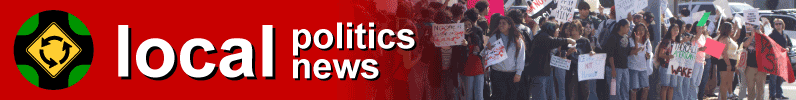
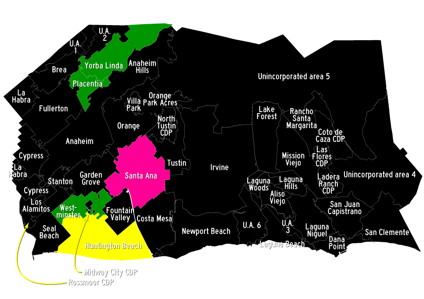

Operating area

Numbering of unincorporated areas is arbitrary.
Green denotes full operation areas.
Purple denotes areas without full operation. Planned or choreographed events only.
Yellow denotes future full operation areas.
Pink denotes future areas without full operation.
Why isn't my area denoted? There hasn't been an opportunity (yet!) to preliminarily operate in and assess the viability of the area.
Why is my area denoted in purple? It was not viable to operate in the area. It would be easier to document planned and choreographed events.
- Garden Grove, 16. February 2026
- Traffic was a nightmare, and it wasn't even rush hour.
- Orange, 20. February 2026
- ...was nearly hit intentionally by a white Volkswagen Jetta in the circle/square.
- ...also nearly hit accidentally by a police officer who was distracted with his computer.